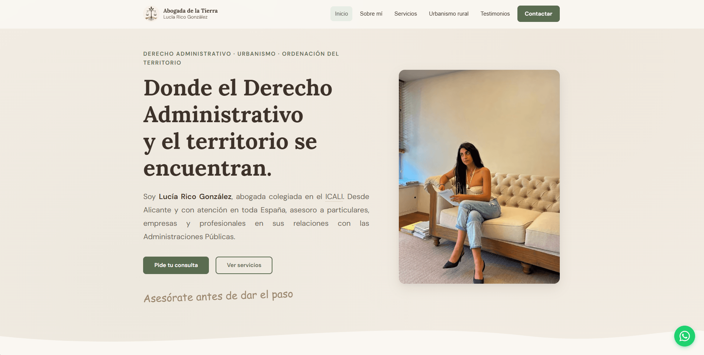
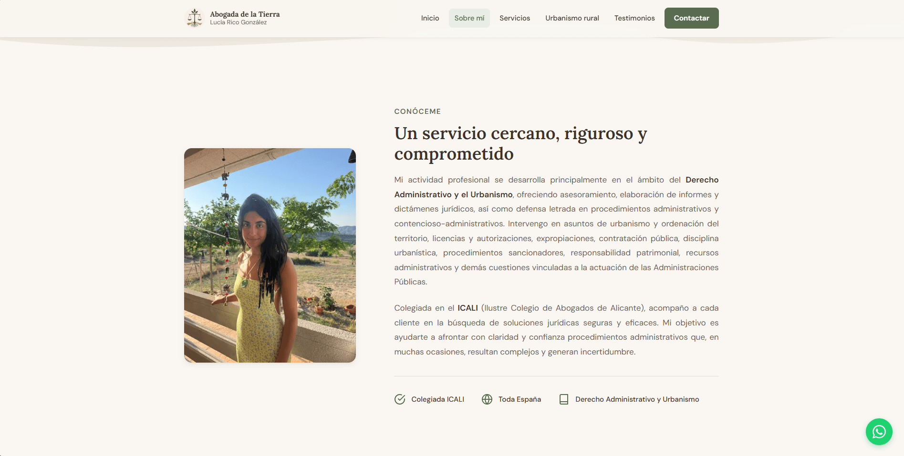
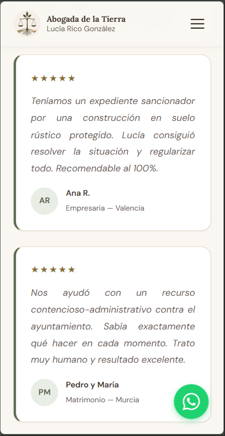
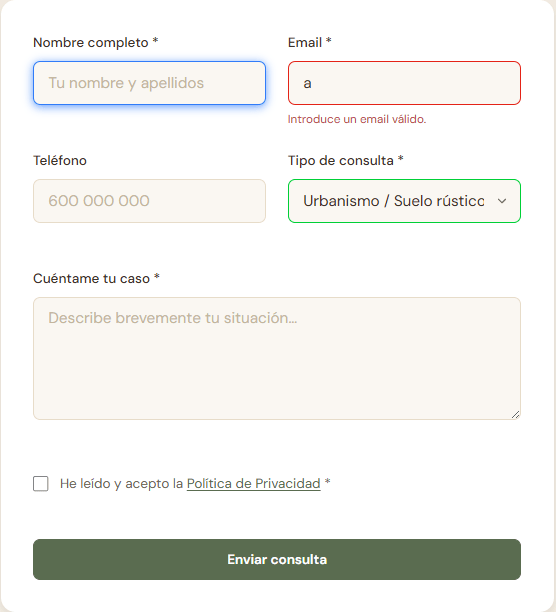
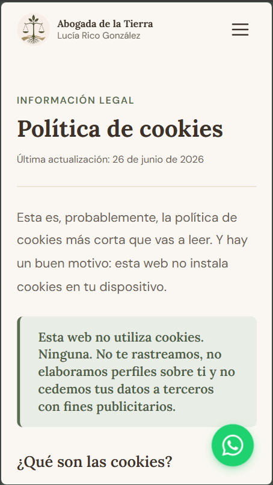
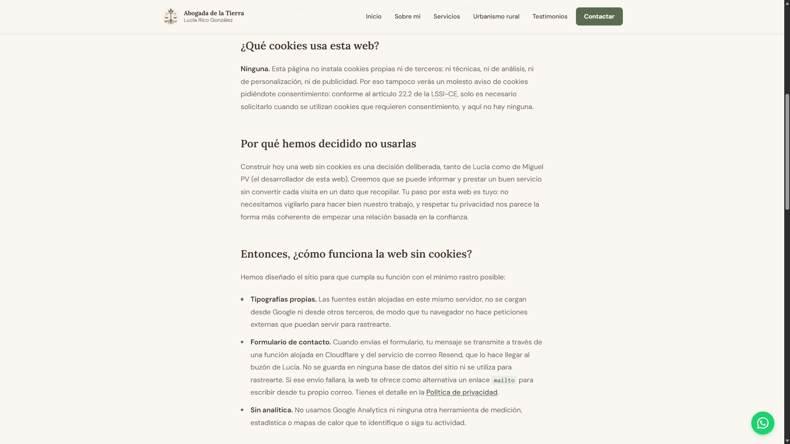
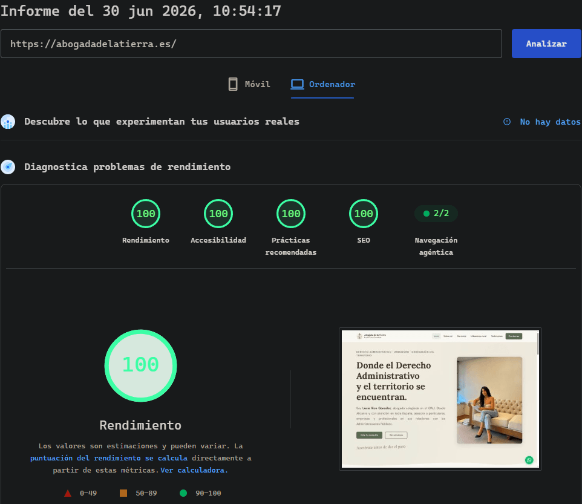

Abogada de la Tierra
A freelance project: a complete website I designed and built for an administrative-law and urban-planning firm in Alicante. Same vanilla, performance-first discipline as my own site — but a warm, editorial look tailored to the client, and a serverless contact form behind it.







Overview
Abogada de la Tierra is the website of Lucía Rico González, a lawyer specialising in Administrative Law and urban planning, based in Alicante and serving clients across Spain. It was a freelance commission, and I took it end to end: the design, the build, the contact backend, the SEO and the deployment.
The remit was a credible, welcoming online home that turns visitors into enquiries — clear about what she does, easy to contact, and fast and stable enough to reflect well on a professional whose whole value is trust.
A different design language
This is deliberately nothing like my own dark, terminal-green portfolio. The brief called for calm, trust and warmth, so I built an editorial palette of cream, sage green and earth tones, with Lora serif headings, a clean DM Sans body and occasional handwritten Caveat accents. The territory-and-land theme of her practice runs through it.
It's also built to convert: a clear hero promise, service cards that map to real practice areas, a highlighted "rural urbanism" section, testimonials, repeated calls to action and a floating WhatsApp button for the quickest possible first contact.
Performance & build
Same engineering discipline as my own site, no compromises for a client. No framework and zero
runtime dependencies; the critical CSS is inlined at build time so the page paints without waiting
on a stylesheet request; fonts are self-hosted woff2; and imagery is served as responsive AVIF/WebP.
Scroll-reveal animations are subtle and fully respect prefers-reduced-motion.
The result shows in PageSpeed Insights: 100 in Performance, Accessibility, Best Practices and SEO.
The contact form
Enquiries are the whole point of the site, so the form had to be reliable. A serverless Cloudflare Function receives each submission and relays it to the client's inbox through Resend — nothing is stored, the message is simply forwarded and discarded. It's hardened and resilient:
- A hidden honeypot field silently traps spam bots.
- Validation runs server-side, independent of the browser.
- It's progressively enhanced across three tiers, so a lead is never lost: with JavaScript it submits via
fetchand shows inline status; if that request fails it offers a pre-filledmailto:fallback; and with no JavaScript at all, the plain form still POSTs and redirects to a thank-you page.
Privacy & security by default
The site takes the same stance on privacy that I take on my own: zero cookies, zero analytics and zero tracking. Fonts are self-hosted, so the browser never makes a single third-party request that could be used to follow a visitor. There's no cookie banner for a very simple reason — there are no cookies to consent to.
That let us write what's probably the shortest, most honest cookie policy you'll read — a deliberate decision by the client and me, drafted as part of the engagement. You can read it here.
The same respect-the-visitor idea carries into security: the site ships with a strict
Content Security Policy (Trusted Types included), HSTS with preload, and a
Permissions-Policy that switches off the browser APIs the site doesn't need.
Built to be found
Because the audience is local, the site is wrapped in LegalService structured data —
address, geo-coordinates, the areas served (Alicante and all of Spain), opening hours and practice
areas — to help it surface in local search and rich results. It also ships with everything a Spanish
business site is expected to have: a legal notice, and privacy and cookie policies.
The structured data validates cleanly in the Schema.org validator and passes Google's Rich Results Test.
Open source, by agreement
This is real, paid client work, and the source is public on purpose — to show how it's built. That's a decision with consequences, so I made it with Lucía, not around her. Before anything went public I walked her through what publishing the code actually means: the structure, copy and styling become copyable; the contact form's plumbing is visible (though no secrets are — the API key and destination inbox live in Cloudflare environment variables, never in the repo); and public history is effectively permanent. She weighed that against the upside — transparency, and a documented, auditable site — and gave informed consent.
In the same conversation she agreed to credit me in two low-key places: a small "built by" line in
the footer, and a deliberate distinction in the site's structured data — I'm marked as the site's
creator, the person who built it, while Lucía stays its author and
publisher. The words, the photos and the brand are entirely hers; the engineering is the
part I'm sharing. The code ships under an MIT licence so others can learn from and reuse it, while
everything of hers stays hers.
Status & maintenance
Live at abogadadelatierra.es. It isn't shipped-and-forgotten: I actively monitor it and act right away if anything breaks. Lucía and I have also agreed to a review roughly two months after launch — once she has lived with the site and seen what her clients actually do with it — to fold her feedback back into the code, so some of the decisions here may still evolve.